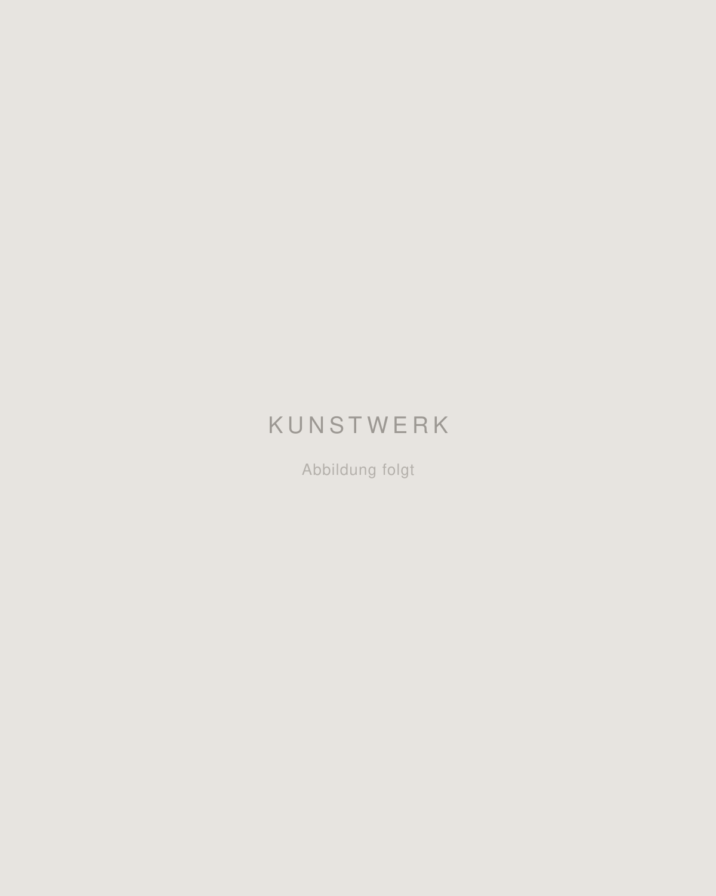
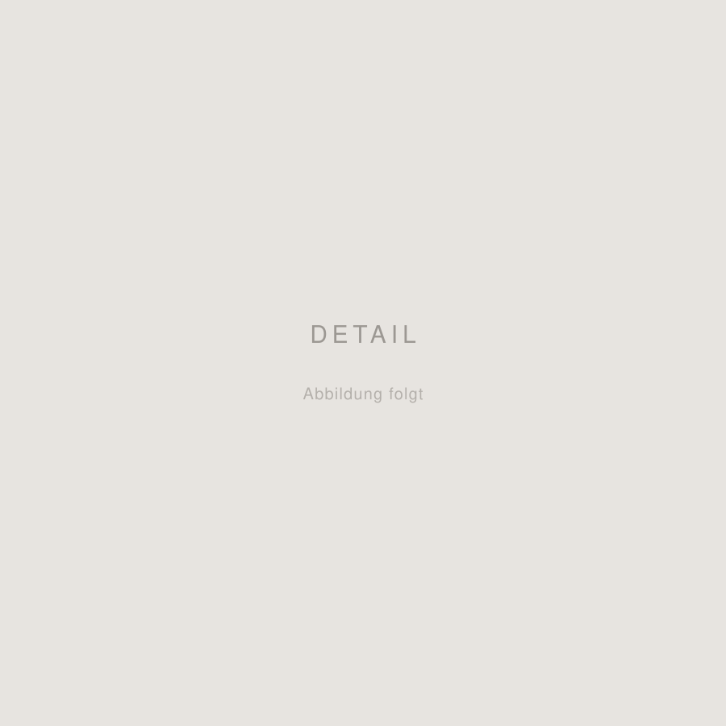

01
Titel folgt
- Jahr
- folgt
- Technik
- folgt
- Material
- folgt
- Maße
- folgt
Künstlerische Arbeiten, die außerhalb des Studiums entstanden sind.
Zeichnung, Malerei und Objekte — aus derselben Neugierde und
Begeisterung heraus, die auch meine Entwürfe prägen.


Nicht alles ist hier zu sehen. Bei Interesse an einzelnen Arbeiten oder an einer Auswahl gerne melden.
Künstlerische Arbeiten fertige ich auch gerne auf Anfrage für Sie an.
Erzählen Sie mir einfach von Motiv, Format, Anlass oder Inspiration,
dann melde ich mich mit einem Vorschlag.